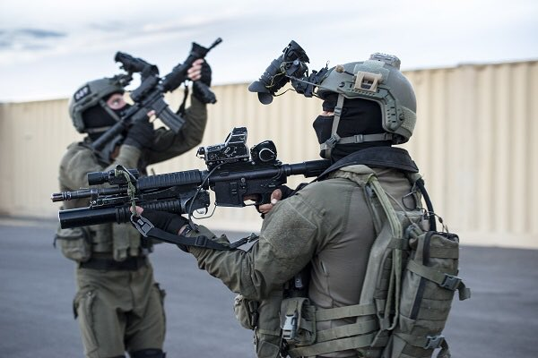

Special

669 Unit
Unit 669 was founded in 1974, in the aftermath of the 1973 Yom Kippur War, when an ad hoc medevac unit made some 5000 extractions. Its initial mandate was to extract and provide initial medical treatment to downed (and possibly injured) pilots beyond lines. However, in later years the unit also participated in extraction of soldiers of other arms of the Israeli Defense Forces, especially Sayeret (Special Forces) fighters in operations beyond enemy lines and seamen in distress.
Shaldag Unit
Shaldag was founded in 1974, in the aftermath of the Yom Kippur War, by Muki Betser, a Sayeret Matkal veteran who brought several Matkal veterans with him. Initially operating as a Sayeret Matkal reserve company, it was eventually transferred to the IAF.

Air Defense Command
During the 1948 Arab–Israeli War, the Air Defense Network was part of the Artillery Corps, primarily relying on machine guns. During the 1960s, 40 mm radar-guided anti-aircraft guns were introduced, and in 1965, MIM-23 Hawk surface-to-air missiles. The latter were operated by the Air Force's surface-to-air units. In the 1970s, the entire Air Defense Network was merged with the Air Force.